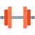

AMRAP TIMER
Tips for AMRAP exercises
-
1

Set a Clear Goal: Before starting your AMRAP set, decide on a specific goal for the number of reps you want to achieve. This will give you a target to work towards and help you push yourself during the set.
-
2
Choose Appropriate Weight: Select a weight that challenges you but allows you to maintain good form throughout the set. If the weight is too light, you won't maximize your effort, and if it's too heavy, you might sacrifice form and risk injury.
-
3

Warm-Up Thoroughly: Spend adequate time warming up your muscles and joints before diving into the AMRAP set. This helps prevent injuries and prepares your body for the intensity of the workout.
-
4

Focus on form: Quality reps are crucial for getting the most out of an AMRAP set. Focus on performing each rep with proper form, especially as fatigue sets in. Avoid rushing through reps or sacrificing technique to chase a higher rep count.
-
5

Control Your Breathing:Pay attention to your breathing throughout the set. Take deep breaths in and exhale forcefully during exertion phases of the exercise. Proper breathing can help you maintain stamina and energy during the AMRAP.
-
6

Pace Yourself: While AMRAP workouts are about pushing your limits, pacing yourself is important to sustain effort throughout the set. Find a rhythm that allows you to keep moving consistently without burning out too quickly.
-
7

Stay Mentally Tough: Mental strength plays a significant role in AMRAP workouts. Prepare yourself to push through discomfort and fatigue, focusing on your goal and staying motivated even as the set becomes challenging.
-
8

Track Your Progress: : Keep a record of your AMRAP performances, including the number of reps completed and any notes about the workout. Tracking your progress over time can help you set new goals and gauge improvements in strength and endurance.
- 1.Full-Body AMRAP:
- Bodyweight Squats
- Push-Ups
- Burpees
- Sit-Ups
- 2.Upper Body Focus:
- Pull-Ups or Bent-Over Rows
- Push-Ups or Dumbbell Presses
- Dips (using parallel bars or a bench)
- Plank (hold for max time)
- 3.Lower Body Blast:
- Kettlebell Swings
- Box Jumps or Step-Ups
- Lunges (alternating legs)
- Wall Sit (hold for max time)
- 4.Core and Cardio AMRAP:
- Mountain Climbers
- Bicycle Crunches
- Jumping Jacks
- Russian Twists (with a medicine ball or weight)
What is AMRAP
AMRAP stands for "As Many Reps (or Rounds) As Possible." It's a type of workout format commonly used in strength training and high-intensity interval training (HIIT) routines. In an AMRAP workout, the goal is to complete as many repetitions or rounds of a specific exercise or set of exercises within a set time frame.